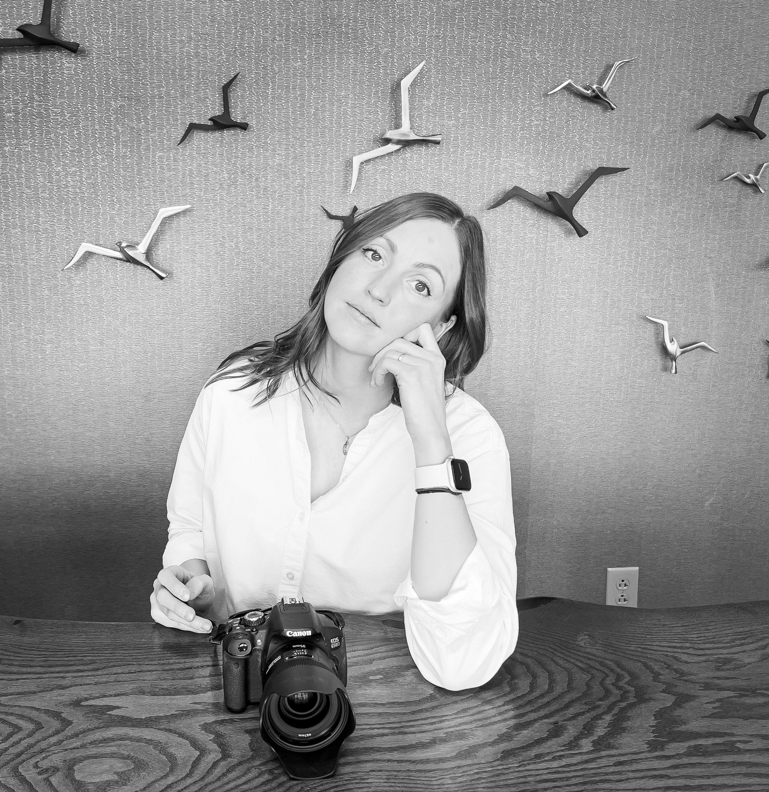
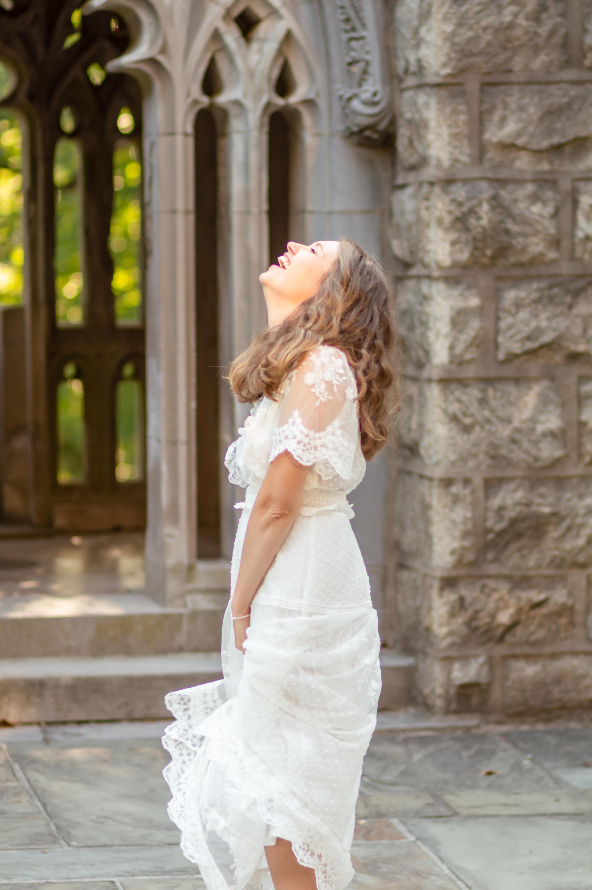
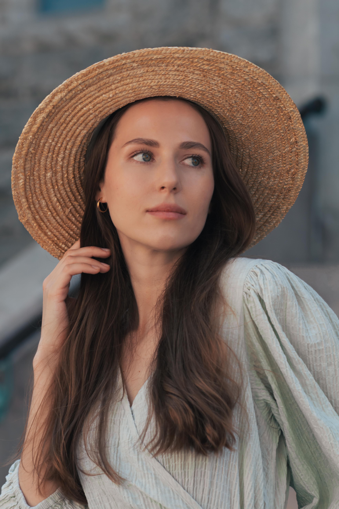
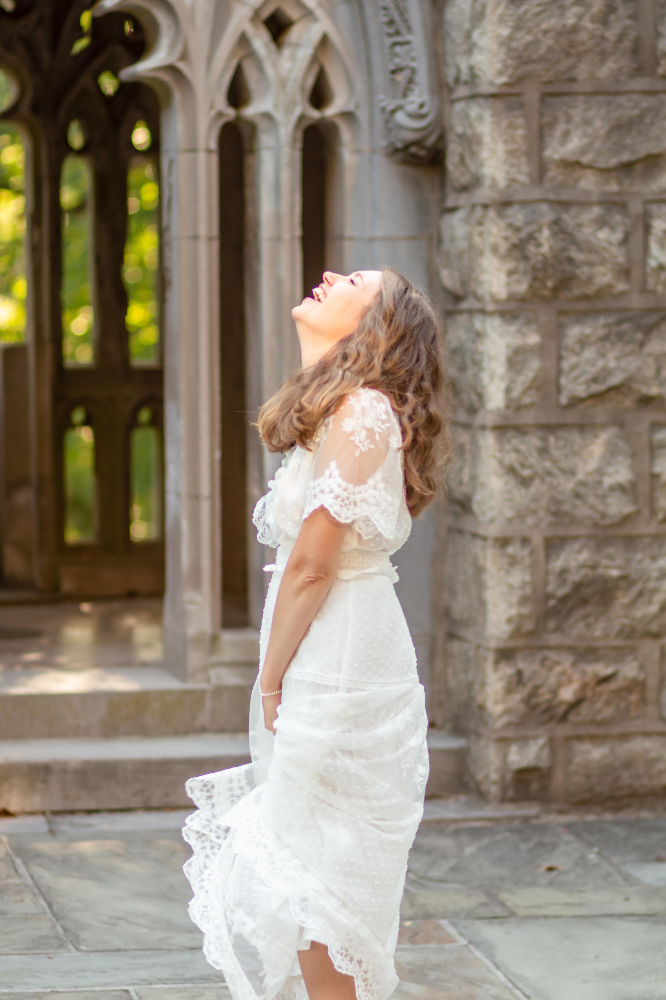
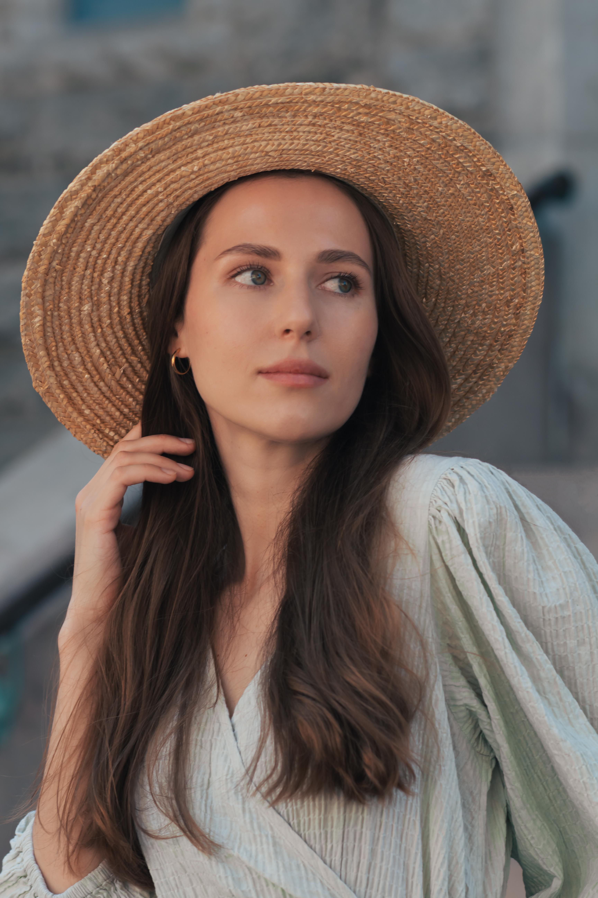
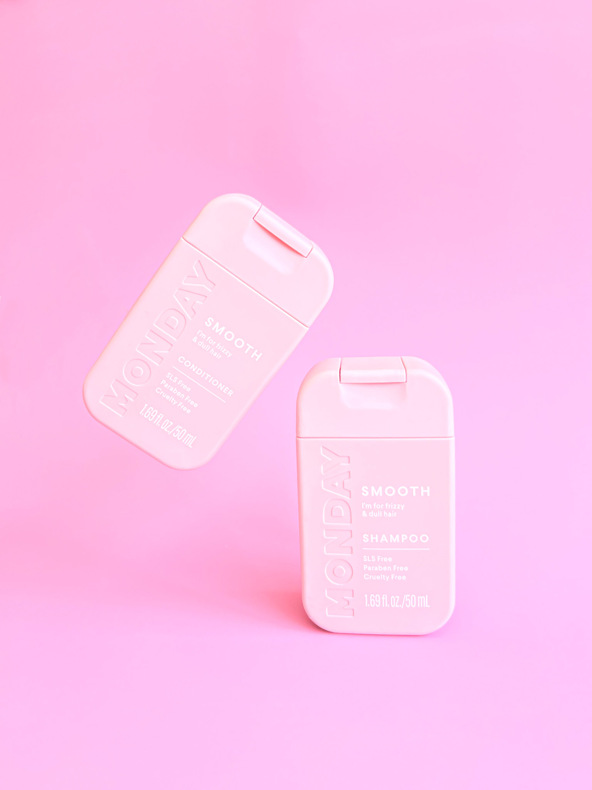
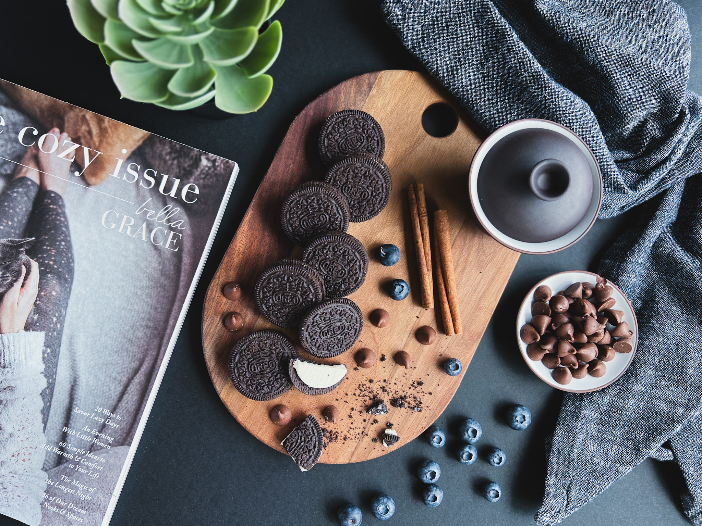
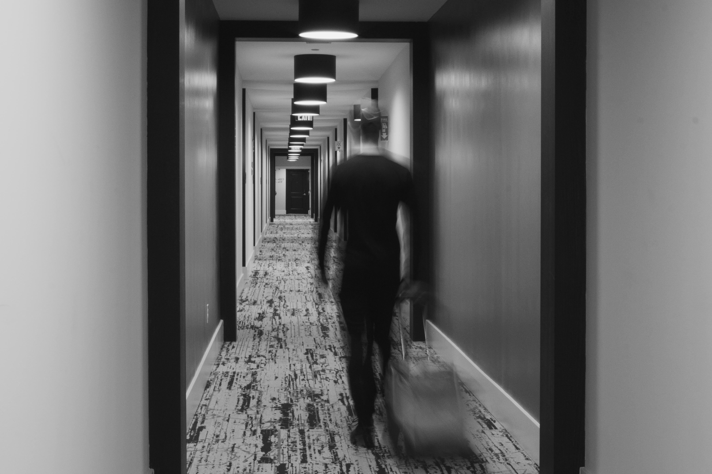
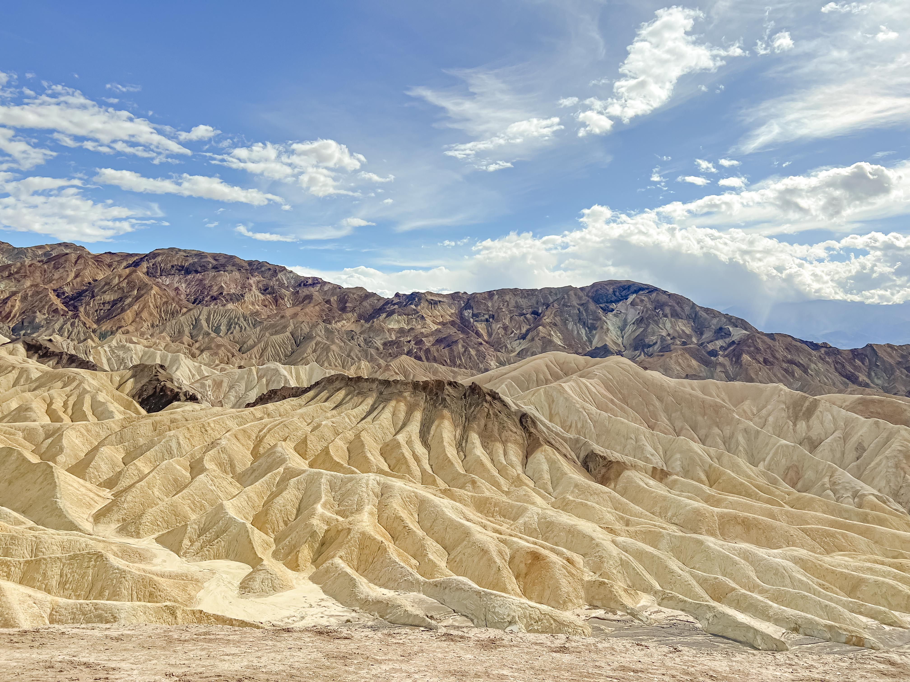

Hi, I'm Irina.
My biggest hobby: capturing images through photography. Photography is more than just a hobby for me—it's a
journey of self-expression, where I explore different styles and perspectives.
I love capturing moments in various styles—portraits, product shots, food, black and white, and landscapes.
Photography is my way of exploring and expressing creativity. I'm excited to share my journey with you and
hope you enjoy the different perspectives I bring to each shot!
Portrait Photography
Portrait photography is an art form that captures the personality, emotions, and essence of individuals through
carefully crafted images. It involves a thoughtful combination of lighting, composition, and posing to
highlight the subject's unique characteristics. A successful portrait goes beyond simply recording a person's
appearance; it aims to convey their inner qualities and story. Photographers often use various techniques to
create mood and atmosphere, such as adjusting lighting to enhance facial features or using backgrounds that
complement the subject. Whether it's a formal studio shoot or a candid moment, portrait photography strives to
create an impactful and memorable representation of the subject, allowing viewers to connect with the person
depicted in the photograph.
 



Product Photography
Product photography focuses on capturing images of items in a way that emphasizes their features and enhances
their appeal. It involves careful attention to lighting, composition, and styling to present the product in its
best light. High-quality product photos are essential for marketing and sales, as they help potential customers
see the product's details and benefits clearly, influencing their purchasing decisions. By showcasing the
product from multiple angles and using various techniques, product photography aims to create an engaging
visual representation that effectively communicates the item's value.

Food Photography
Food photography is a specialized field that focuses on capturing visually appealing images of food. This genre
of photography is crucial in both culinary arts and marketing, as it plays a significant role in enticing
viewers and showcasing dishes in their best light..

Black & White Photography
Black and white photography is a classic and timeless art form that emphasizes the use of contrast, texture,
and composition to create compelling images. While it may seem simplistic compared to color photography, it
offers a unique way to convey mood, emotion, and timelessness through the careful manipulation of light and
shadow.

Landscape Photography
Landscape photography is a genre dedicated to capturing the natural world, showcasing the beauty and grandeur
of diverse environments. From sweeping vistas to intimate scenes, landscape photography emphasizes the
intricate details and expansive views of nature and urban settings alike. This chapter explores the key
elements and techniques that contribute to creating compelling landscape images.
